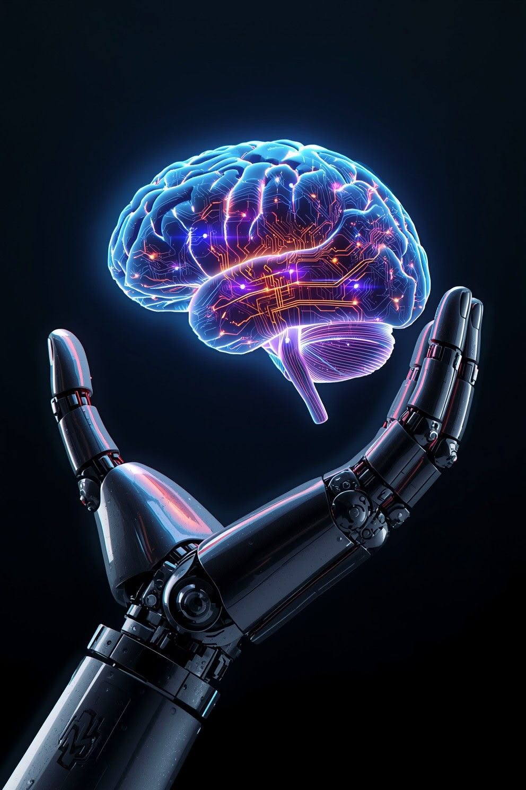

ԹՎԱՅԻՆ ԳԻՐՔ
ԱԲ-ն՝ գործընկե՞ր, թե՞ մրցակից
Արհեստական բանականությունը մեր ժամանակների ամենահետաքրքիր տեխնոլոգիական ձեռքբերումներից է։
TECH WORLD
Արհեստական բանականության աշխարհում
Արհեստական բանականությունը (ԱԲ) ժամանակակից տեխնոլոգիաների կարևորագույն ուղղություններից է։ Այն համակարգչային համակարգերին հնարավորություն է տալիս սովորել, վերլուծել տեղեկությունները, ճանաչել պատկերներ և լուծել տարբեր խնդիրներ։
Այսօր արհեստական բանականությունը կիրառվում է կրթության, բժշկության, գիտության, տրանսպորտի, ծրագրավորման և բազմաթիվ այլ ոլորտներում։
Սակայն առաջանում է կարևոր հարց․ արդյո՞ք արհեստական բանականությունը մարդու գործընկերն է, թե՞ ապագայում կարող է դառնալ նրա մրցակիցը։
ԱԲ-ն մեր առօրյայում
Արհեստական բանականությունն արդեն դարձել է մեր առօրյայի մի մասը։ Մենք այն օգտագործում ենք նույնիսկ այն ժամանակ, երբ չենք նկատում։
Օրինակ՝ հեռախոսների ձայնային օգնականները, քարտեզները, թարգմանիչները, տեսանյութերի և երաժշտության առաջարկությունների համակարգերը աշխատում են ԱԲ-ի օգնությամբ։
ԱԲ-ն կարող է օգնել արագ գտնել անհրաժեշտ տեղեկությունը, կազմակերպել աշխատանքը և հեշտացնել առօրյա տարբեր գործողություններ։
ԱԲ-ն՝ որպես ծրագրավորման օգնական
Ծրագրավորումը այն ոլորտներից է, որտեղ արհեստական բանականությունը մեծ օգնություն է ցուցաբերում մարդուն։
Այն կարող է առաջարկել կոդի տարբերակներ, բացատրել ծրագրային սխալները, օգնել հասկանալ բարդ հրահանգները և առաջարկել լուծումներ։
Սակայն ԱԲ-ի առաջարկած կոդը միշտ չէ, որ ճիշտ է։ Ծրագրավորողը պետք է ստուգի արդյունքը, հասկանա դրա աշխատանքը և անհրաժեշտության դեպքում ուղղումներ կատարի։
Մարդը և ԱԲ-ն՝ խնդիրների լուծման ճանապարհին
Մարդու և արհեստական բանականության համագործակցությունը կարող է արդյունավետ արդյունքներ ապահովել։
Մարդն ունի ստեղծագործական մտածողություն, զգացմունքներ, փորձ և ինքնուրույն դատողություն։ Իսկ ԱԲ-ն կարող է արագ մշակել մեծ ծավալի տեղեկություններ և առաջարկել տարբեր լուծումներ։
Երբ մարդը ճիշտ է ձևակերպում խնդիրը և քննադատաբար գնահատում ԱԲ-ի պատասխանները, հնարավոր է հասնել ավելի լավ արդյունքի։
ԱԲ-ի ստեղծագործական հնարավորությունները

Արհեստական բանականությունը կարող է օգնել ստեղծել նկարներ, երաժշտություն, պատմություններ, տեսանյութեր և տարբեր գաղափարներ։
Այն կարող է առաջարկել ստեղծագործական լուծումներ, օգնել պատկերացնել նոր նախագծեր և զարգացնել մարդու երևակայությունը։
Սակայն ստեղծագործական աշխատանքի մեջ կարևոր է մարդու սեփական միտքը, ճաշակը և անհատականությունը։ ԱԲ-ի ստեղծած արդյունքը նույնպես պետք է գնահատել և անհրաժեշտության դեպքում փոփոխել։
ԱԲ-ի առավելություններն ու վտանգները
Արհեստական բանականության առավելություններն են՝
- Տեղեկությունների արագ մշակում։
- Ժամանակի խնայողություն։
- Կրթության և աշխատանքի հեշտացում։
- Նոր գաղափարների և լուծումների առաջարկում։
- Տարբեր ոլորտներում արդյունավետության բարձրացում։
Միևնույն ժամանակ կան նաև վտանգներ՝
- Սխալ կամ ոչ ճշգրիտ տեղեկությունների տարածում։
- Անձնական տվյալների գաղտնիության խնդիրներ։
- Տեխնոլոգիայից չափազանց մեծ կախվածություն։
- Մարդու ինքնուրույն մտածողության նվազման վտանգ։
Հետևաբար ԱԲ-ն պետք է օգտագործել խելամիտ, ստուգել դրա տրամադրած տեղեկությունները և չմոռանալ սեփական մտածողության կարևորության մասին։
ԱԲ-ն՝ գործընկե՞ր, թե՞ մրցակից
Արհեստական բանականությունը կարող է դառնալ մարդու հուսալի գործընկերը, եթե այն ճիշտ օգտագործվի։ Այն օգնում է սովորել, ստեղծագործել, աշխատել և լուծել բարդ խնդիրներ։
Սակայն ոչ մի տեխնոլոգիա չպետք է փոխարինի մարդու ինքնուրույն մտածողությանը, պատասխանատվությանը և որոշումներ կայացնելու կարողությանը։
ԱԲ-ն մեր մրցակիցը չէ, եթե մենք կարողանում ենք այն դարձնել մեր գործընկերը։
Բացահայտիր TECH WORLD-ը
Սկանավորիր QR կոդը՝ մեր կայք այցելելու համար։
TECH WORLD — գիտելիք, տեխնոլոգիա և նոր հնարավորություններ։